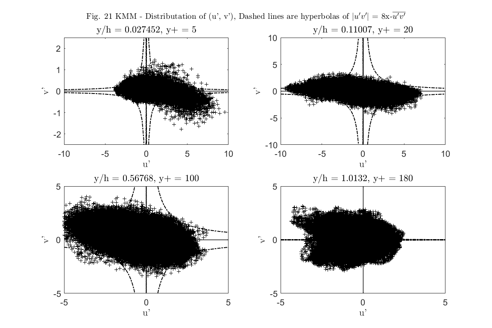

Contents
- Reading Grid data
- Reading position with velocity data set
- Averaging over t, x, z
- 1. Plot the streamwise, wall-normal, spanwise velocity contours in the x–z plane and the y–z plane. Choose any position and time.
- Q1 - Part 1 on x-z plane
- Q1 - Part 2 - on y-z plane
- Q2Compute the friction Reynolds number (Reτ), displacement thickness (δ*/h), momentum
- Q2 - Part1 - Friction Reynolds no (Reτ)
- Q2 - Part2 - displacement thickness (δ*/h)
- Q2 - Part-3 momentum thickness (θ/h)
- Q2 - Part-4 shape factor
- Q3 - Plot the mean velocity profile and root-mean-square velocity fluctuations in wall units.
- Q3 - Part 2
- Q-4 -- . Plot the wall-normal profiles of the total shear stress, viscous shear stress and Reynolds shear
- Q-5 - . Plot the joint probability density function of u' and v' at
- Q6 - Using the velocity field data (INS3D_Vel_000001.dat), plot the streamwise velocity
- Q7 - Plot the streamwise and spanwise autocorrelation functions R11(rx/h) and R11(rz/h) at a given
- 8. Compute the one-dimensional energy spectra of streamwise, wall-normal, and spanwise
% ID - 202183504, Name - Choudhary Kailash Project - 2
Code Link: GitHub_Code
clc
close all
clear
data_path = 'I:/Kailash/Course_Project/Turbulence/Project2/Data_set';
addpath(data_path);
Reading Grid data
h = 1; grid_x = read_pos([data_path, '/Position/Grid_x.dat']); grid_x.Properties.VariableNames = ["i", "x"]; grid_x = h*grid_x.x; grid_y = read_pos([data_path, '/Position/Grid_y.dat']); grid_y.Properties.VariableNames = ["j", "y"]; grid_y = h*grid_y.y; grid_z = read_pos([data_path, '/Position/Grid_z.dat']); grid_z.Properties.VariableNames = ["k", "z"]; grid_z = h*grid_z.z;
Reading position with velocity data set
% consider the fluid is air mu = 1.84e-5; ro = 1.224; nu = mu/ro; %nu = 2.33e-04; h = 1; % It is given that center line reynolds no is 4200, so Re_c = 4200; Uc = Re_c*nu/h; n_files = dir(fullfile(data_path, '/Velocity_field', '*.dat')); vel1 = []; %reading one file to get indices filename = strcat(data_path, '/Velocity_field/', sprintf('INS3D_Vel_%06d.dat', 1)); data = read_vel(filename); indexs = [double(data.i), double(data.j), double(data.k)]; parfor i=1:numel(n_files) filename = strcat(data_path, '/Velocity_field/', sprintf('INS3D_Vel_%06d.dat', i)); data = read_vel(filename); vel_t = [data.U, data.V, data.W]; Velocity_Data(:,:,i) = Uc*vel_t; %i end vel = mean(Velocity_Data,3);
Starting parallel pool (parpool) using the 'local' profile ... Connected to the parallel pool (number of workers: 8).
Averaging over t, x, z
ii = unique(indexs(:,1)) ; nx = length(ii) ;
jj = unique(indexs(:,2)) ; ny = length(jj) ;
kk = unique(indexs(:,3)) ; nz = length(kk) ;
xi = grid_x(ii);
yj = grid_y(jj);
zk = grid_z(kk);
[XX,YY, ZZ] = meshgrid(xi,yj, zk);
UU = reshape(vel(:,1), nx, ny, nz);
UU(end,:,:) = mean(UU(end-20:end-10,:,:), 1);
VV = reshape(vel(:,2), nx, ny, nz);
WW = reshape(vel(:,3), nx, ny, nz);
u_bar = mean(mean(UU,3),1); % we can take direct mean because x and z grids are uniform
v_bar = mean(mean(VV,3),1);
w_bar = mean(mean(WW,3),1);
vel_bar = [u_bar', v_bar', w_bar'];
1. Plot the streamwise, wall-normal, spanwise velocity contours in the x–z plane and the y–z plane. Choose any position and time.
Q1 - Part 1 on x-z plane
ind = (indexs(:,2) == 96); pos = indexs(ind,:); val = vel(ind,:); ii = unique(pos(:,1)) ; nx = length(ii) ; kk = unique(pos(:,3)) ; nz = length(kk) ; xi = grid_x(ii); zk = grid_z(kk); [XX,ZZ] = meshgrid(xi,zk); UU = reshape(val(:,1), nz, nx); VV = reshape(val(:,2), nz, nx); WW = reshape(val(:,3), nz, nx); figure CM = jet(6); plot(zk(1:end), UU(1:end,50), '-or', 'MarkerIndices', 1:5:length(zk), 'LineWidth', 1, 'markersize', 5); hold on plot(zk(1:end), UU(1:end,100), '-<b', 'MarkerIndices', 1:5:length(zk), 'LineWidth', 1, 'markersize', 5); plot(zk(1:end), UU(1:end,150), '-^k', 'MarkerIndices', 1:5:length(zk), 'LineWidth', 1, 'markersize', 5); title('U-Velocity in x-z plane at y = h','FontWeight', 'Bold','Interpreter','Latex'); set(gca, 'FontSize', 15); set(gcf, 'Units', 'Inches', 'Position', [0, 0, 12, 6], 'PaperUnits', 'Inches', 'PaperSize', [12,6]) lgd = {['x = ', num2str(grid_x(50))], ['x = ', num2str(grid_x(100))], ['x = ', num2str(grid_x(150))]}; legend(lgd,'Interpreter','Latex'); xlabel('z','Interpreter','Latex'); ylabel('U','Interpreter','Latex'); figure CM = jet(6); plot(zk(1:end), VV(1:end,50), '-or', 'MarkerIndices', 1:5:length(zk), 'LineWidth', 1, 'markersize', 5); hold on plot(zk(1:end), VV(1:end,100), '-<b', 'MarkerIndices', 1:5:length(zk), 'LineWidth', 1, 'markersize', 5) plot(zk(1:end), VV(1:end,150), '-^k', 'MarkerIndices', 1:5:length(zk), 'LineWidth', 1, 'markersize', 5) title('V-Velocity in x-z plane at y = h','FontWeight', 'Bold','Interpreter','Latex'); set(gca, 'FontSize', 15); set(gcf, 'Units', 'Inches', 'Position', [0, 0, 12, 6], 'PaperUnits', 'Inches', 'PaperSize', [12,6]) lgd = {['x = ', num2str(grid_x(50))], ['x = ', num2str(grid_x(100))], ['x = ', num2str(grid_x(150))]}; legend(lgd,'Interpreter','Latex'); xlabel('z','Interpreter','Latex') ylabel('V','Interpreter','Latex'); figure CM = jet(6); plot(zk(1:end), WW(1:end,50), '-or', 'MarkerIndices', 1:5:length(zk), 'LineWidth', 1, 'markersize', 5); hold on plot(zk(1:end), WW(1:end,100), '-<b', 'MarkerIndices', 1:5:length(zk), 'LineWidth', 1, 'markersize', 5); plot(zk(1:end), WW(1:end,150), '-^k', 'MarkerIndices', 1:5:length(zk), 'LineWidth', 1, 'markersize', 5); title('W-Velocity in y-z plane at x = 2*pi*h','FontWeight', 'Bold','Interpreter','Latex'); set(gca, 'FontSize', 15); set(gcf, 'Units', 'Inches', 'Position', [0, 0, 12, 6], 'PaperUnits', 'Inches', 'PaperSize', [12,6]) lgd = {['y = ', num2str(grid_x(50))], ['y = ', num2str(grid_x(100))], ['y = ', num2str(grid_x(150))]}; legend(lgd,'Interpreter','Latex'); xlabel('z','Interpreter','Latex'); ylabel('W','Interpreter','Latex'); % It looks like there is a problem in U-velocity data at z=zmax point. Even % it caused me some problem in plots related to U in z direction.
Q1 - Part 2 - on y-z plane
say x = 2*pi*h
ind = (indexs(:,1) == 256/2); pos = indexs(ind,:); val = vel(ind,:); jj = unique(pos(:,2)) ; ny = length(jj) ; kk = unique(pos(:,3)) ; nz = length(kk) ; yi = grid_y(jj); zk = grid_z(kk); [YY,ZZ] = meshgrid(yi,zk); UU = reshape(val(:,1), nz, ny); VV = reshape(val(:,2), nz, ny); WW = reshape(val(:,3), nz, ny); figure CM = jet(6); plot(zk(1:end), UU(1:end,50), '-or', 'MarkerIndices', 1:5:length(zk), 'LineWidth', 1, 'markersize', 5); hold on plot(zk(1:end), UU(1:end,100), '-<b', 'MarkerIndices', 1:5:length(zk), 'LineWidth', 1, 'markersize', 5); plot(zk(1:end), UU(1:end,150), '-^k', 'MarkerIndices', 1:5:length(zk), 'LineWidth', 1, 'markersize', 5); title('U-Velocity in y-z plane at x = 2*pi*h','FontWeight', 'Bold','Interpreter','Latex'); set(gca, 'FontSize', 15); set(gcf, 'Units', 'Inches', 'Position', [0, 0, 12, 6], 'PaperUnits', 'Inches', 'PaperSize', [12,6]) lgd = {['y = ', num2str(grid_y(50))], ['y = ', num2str(grid_y(100))], ['y = ', num2str(grid_y(150))]}; legend(lgd,'Interpreter','Latex'); xlabel('z','Interpreter','Latex'); ylabel('U','Interpreter','Latex'); figure CM = jet(6); plot(zk(1:end), VV(1:end,50), '-or', 'MarkerIndices', 1:5:length(zk), 'LineWidth', 1, 'markersize', 5); hold on plot(zk(1:end), VV(1:end,100), '-<b', 'MarkerIndices', 1:5:length(zk), 'LineWidth', 1, 'markersize', 5); plot(zk(1:end), VV(1:end,150), '-^k', 'MarkerIndices', 1:5:length(zk), 'LineWidth', 1, 'markersize', 5); title('V-Velocity in y-z plane at x = 2*pi*h','FontWeight', 'Bold','Interpreter','Latex'); set(gca, 'FontSize', 15); set(gcf, 'Units', 'Inches', 'Position', [0, 0, 12, 6], 'PaperUnits', 'Inches', 'PaperSize', [12,6]) lgd = {['y = ', num2str(grid_y(50))], ['y = ', num2str(grid_y(100))], ['y = ', num2str(grid_y(150))]}; legend(lgd,'Interpreter','Latex'); xlabel('z','Interpreter','Latex'); ylabel('V','Interpreter','Latex'); figure plot(zk(1:end), WW(1:end,50), '-or', 'MarkerIndices', 1:5:length(zk), 'LineWidth', 1, 'markersize', 5); hold on plot(zk(1:end), WW(1:end,100), '-<b', 'MarkerIndices', 1:5:length(zk), 'LineWidth', 1, 'markersize', 5); plot(zk(1:end), WW(1:end,150), '-^k', 'MarkerIndices', 1:5:length(zk), 'LineWidth', 1, 'markersize', 5); title('U-Velocity in y-z plane at x = 2*pi*h','FontWeight', 'Bold','Interpreter','Latex'); set(gca, 'FontSize', 15); set(gcf, 'Units', 'Inches', 'Position', [0, 0, 12, 6], 'PaperUnits', 'Inches', 'PaperSize', [12,6]) lgd = {['y = ', num2str(grid_y(50))], ['y = ', num2str(grid_y(100))], ['y = ', num2str(grid_y(150))]}; legend(lgd,'Interpreter','Latex'); xlabel('z','Interpreter','Latex'); ylabel('W','Interpreter','Latex');
clearvars('-except', 'Velocity_Data', 'data_path', 'indexs', 'vel_tavg', 'grid_x', 'grid_y', 'grid_z', 'vel_bar', 'nx',... 'ny', 'nz', 'Uc', 'nu', 'Re_c', 'h');
Q2Compute the friction Reynolds number (Reτ), displacement thickness (δ*/h), momentum
thickness (θ/h) and shape factor (H = δ/ θ). Compare your results with Table 1 in KMM.
% Lets consider t=20sec for the computation of the friction velocity. % filename = strcat(data_path, '/Velocity_field/', sprintf('INS3D_Vel_%06d.dat', 41)); % data = read_vel(filename);
Q2 - Part1 - Friction Reynolds no (Reτ)
% Velocity at y=0 (wall normal direction) % viscous stress on the wall % for that we need to consider the stream and span wise direction % velocities u1 = sqrt( vel_bar(1,1).^2 + vel_bar(1,3).^2 ); u_tua = sqrt(nu*u1/grid_y(1)); format short Re_tua = u_tua*h./nu; disp(['friction Reynolds number (Reτ) = ', num2str(Re_tua)]);
friction Reynolds number (Reτ) = 178.4352
Q2 - Part2 - displacement thickness (δ*/h)
% δ* = integration(1-u/Um, dy) with limit 0 to h % say x = 2*pi*h and z = pi*h(mid points) u_bar = vel_bar(:,1); U0 = max(u_bar);%(1/(2*h))*trapz(grid_y, u_bar); ind = U0>u_bar(1:round(end/2)); u = u_bar(ind); y = grid_y(ind); %plot(u, yi); del_star = trapz(grid_y((1:floor(end/2))), (1-u_bar(1:floor(end/2))./U0)); del_star_by_h = del_star/h; disp(['displacement thickness (δ*/h) = ', num2str(del_star_by_h)]);
displacement thickness (δ*/h) = 0.148
Q2 - Part-3 momentum thickness (θ/h)
%plot(u, yi); tha = trapz(grid_y((1:floor(end/2))), (u_bar(1:floor(end/2))./U0).*(1-u_bar(1:floor(end/2))./U0)); tha_by_h = tha/h; disp(['momentum thickness(θ/h) = ', num2str(tha_by_h)]);
momentum thickness(θ/h) = 0.091489
Q2 - Part-4 shape factor
H = del_star/tha; disp(['shape factor (H) = ', num2str(H)]); heading={'Variable' 'KMM' 'Our Results'}; data = ["Reτ", 180, Re_tua; "δ*/h", 0.141, del_star_by_h; "θ/h", 0.087, tha_by_h; "H", 1.62, H]; Q2_Results = array2table(data, 'VariableNames', heading) CM = jet(6); figure plot(u_bar, grid_y, 'color', CM(1, :), 'LineWidth', 2); title('$U_{mean}$ in y-direction','FontWeight', 'Bold','Interpreter','Latex'); set(gca, 'FontSize', 15); set(gcf, 'Units', 'Inches', 'Position', [0, 0, 12, 6], 'PaperUnits', 'Inches', 'PaperSize', [12,6]) axis square grid on xlabel('$U_{mean}$','Interpreter','Latex'); ylabel('y/h','Interpreter','Latex');
shape factor (H) = 1.6176
Q2_Results =
4×3 table
Variable KMM Our Results
________ _______ ___________
"Reτ" "180" "178.4352"
"δ*/h" "0.141" "0.148"
"θ/h" "0.087" "0.091489"
"H" "1.62" "1.6176"
clearvars('-except', 'Velocity_Data', 'data_path', 'indexs', 'vel_tavg', 'grid_x', 'grid_y', 'grid_z', 'vel_bar', 'h'... , 'Re_tua', 'del_star', 'tha', 'H', 'u_tua', 'CM', 'nx', 'ny', 'nz', 'Uc', 'h', 'nu');
Q3 - Plot the mean velocity profile and root-mean-square velocity fluctuations in wall units.
Compare your results with figure 5 and 6 in KMM.
% y-plus y_plus = grid_y(1:round(end/2)) * u_tua / nu; u_plus = vel_bar(:,1)./(u_tua); u_plus1 = y_plus; u_plus2 = 2.5*log(y_plus) + 5.5; figure plot(y_plus, u_plus(1:round(end/2)),'LineWidth', 2); hold on plot(y_plus(y_plus<15), u_plus1(y_plus<15), '--k','LineWidth', 2); plot(y_plus(y_plus>8), u_plus2(y_plus>8), '--k','LineWidth', 2); set(gca, 'XScale', 'log') title('Fig 5 KMM - Mean velocity profile','FontWeight', 'Bold','Interpreter','Latex'); set(gca, 'FontSize', 15); set(gcf, 'Units', 'Inches', 'Position', [0, 0, 12, 6], 'PaperUnits', 'Inches', 'PaperSize', [12,6]) %xlim([0, 300]) grid on xlabel('$y^+$','Interpreter','Latex'); ylabel('$u^+$','Interpreter','Latex');
Q3 - Part 2
n this paper an overbar indicates an average over x, z and t, and a prime indicates perturbation from this average. We have the time and x,z averaged data. We need the one data file to get the perturbation from.
n_files = dir(fullfile(data_path, '/Velocity_field', '*.dat')); N = numel(n_files); Mean_U_all = zeros(size(indexs)); for i=1:size(indexs,1) Mean_U_all(i,:) = vel_bar(indexs(i,2),:); end uvw = Velocity_Data-Mean_U_all; uvw_rms = sqrt(sum(uvw.^2, 3)./N); u_rms = reshape(uvw_rms(:,1), nx, ny, nz); v_rms = reshape(uvw_rms(:,2), nx, ny, nz); w_rms = reshape(uvw_rms(:,3), nx, ny, nz); u_rms_mean = mean(mean(u_rms, 3),1)'; v_rms_mean = mean(mean(v_rms, 3),1)'; w_rms_mean = mean(mean(w_rms, 3),1)';
clear uvw uvw_rms u_rms v_rms w_rms
% % uu_sqr_sum = 0; % vv_sqr_sum = 0; % ww_sqr_sum = 0; % % for i=1:numel(n_files) % filename = strcat(data_path, '/Velocity_field/', sprintf('INS3D_Vel_%06d.dat', i)); % data = read_vel(filename); % vel_t = Uc.*[data.U, data.V, data.W]; % % % % uu = UU-vel_bar(:,1)'; % vv = VV-vel_bar(:,2)'; % ww = WW-vel_bar(:,3)'; % % % vel_t = [data.U, data.V, data.W]; % % vel1(:,:,i) = vel_t; % % i % % uu_sqr_sum = uu_sqr_sum + uu.^2; % vv_sqr_sum = vv_sqr_sum + vv.^2; % ww_sqr_sum = ww_sqr_sum + ww.^2; % i % end % % % N = numel(n_files); % u_rms = (uu_sqr_sum./N).^0.5; % v_rms = (vv_sqr_sum./N).^0.5; % w_rms = (ww_sqr_sum./N).^0.5; % % u_rms_mean = mean(mean(u_rms, 3),1)'; % v_rms_mean = mean(mean(v_rms, 3),1)'; % w_rms_mean = mean(mean(w_rms, 3),1)';
% vel_pertub_t = velocity_mid_line - vel_bar; % N = 41%size(vel_pertub_t,3); % vel_rms = sqrt((1/N) * sum(vel_pertub_t.^2, 3)); figure plot(grid_y, u_rms_mean/u_tua, '-or', 'MarkerIndices', 1:5:length(grid_y), 'LineWidth', 1, 'markersize', 5); hold on plot(grid_y, v_rms_mean./u_tua, '-<b', 'MarkerIndices', 1:5:length(grid_y), 'LineWidth', 1, 'markersize', 5); plot(grid_y, w_rms_mean./u_tua, '-^k', 'MarkerIndices', 1:5:length(grid_y), 'LineWidth', 1, 'markersize', 5); title('Fig. 6(a) KMM - RMS velocity fluctuations normalized by the wall shear velocity','FontWeight',... 'Bold', 'Interpreter','Latex'); set(gca, 'FontSize', 15); set(gcf, 'Units', 'Inches', 'Position', [0, 0, 12, 6], 'PaperUnits', 'Inches', 'PaperSize', [12,6]) xlabel('y/h','Interpreter','Latex'); ylabel('$u_{rms}, v_{rms}, w_{rms}$','Interpreter','Latex'); legend('$u_{rms}$', '$v_{rms}$', '$w_{rms}$', 'Location', 'EastOutside','Interpreter','Latex'); figure plot(y_plus(y_plus<80), u_rms_mean(y_plus<80)./u_tua, '-or', 'MarkerIndices', 1:5:length(y_plus(y_plus<80)), 'LineWidth', 1, 'markersize', 5); hold on plot(y_plus(y_plus<80), v_rms_mean(y_plus<80)./u_tua, '-<b', 'MarkerIndices', 1:5:length(y_plus(y_plus<80)), 'LineWidth', 1, 'markersize', 5); plot(y_plus(y_plus<80), w_rms_mean(y_plus<80)./u_tua, '-^k', 'MarkerIndices', 1:5:length(y_plus(y_plus<80)), 'LineWidth', 1, 'markersize', 5); title('Fig. 6(b) KMM - RMS velocity fluctuations normalized by the wall shear velocity','FontWeight', ... 'Bold','Interpreter','Latex'); set(gca, 'FontSize', 15); set(gcf, 'Units', 'Inches', 'Position', [0, 0, 12, 6], 'PaperUnits', 'Inches', 'PaperSize', [12,6]) xlabel('y+'); ylabel('$u_{rms}, v_{rms}, w_{rms}$','Interpreter','Latex'); legend('$u_{rms}$', '$v_{rms}$', '$w_{rms}$', 'Location', 'EastOutside','Interpreter','Latex');
clearvars('-except', 'Velocity_Data', 'data_path', 'indexs', 'vel_tavg', 'grid_x', 'grid_y', 'grid_z', 'vel_bar', 'h'... , 'Re_tua', 'del_star', 'tha', 'H', 'u_tua', 'CM', 'N', 'nu', 'u_rms_mean', 'v_rms_mean', 'w_rms_mean',... 'nx', 'ny', 'nz', 'Uc', 'h', 'nu', 'Mean_U_all');
Q-4 -- . Plot the wall-normal profiles of the total shear stress, viscous shear stress and Reynolds shear
stress. Compare your results with figure 10 of KMM.
uvw_pert = Velocity_Data - Mean_U_all; uv_pert = mean(uvw_pert(:,1,:).*uvw_pert(:,2,:), 3); uv_pert = reshape(uv_pert, nx, ny, nz); uv_pert_mean = mean(mean(uv_pert, 3),1)'; % n_files = dir(fullfile(data_path, '/Velocity_field', '*.dat')); % uv_pert = 0; % % % for i=1:numel(n_files) % filename = strcat(data_path, '/Velocity_field/', sprintf('INS3D_Vel_%06d.dat', i)); % data = read_vel(filename); % vel_t = Uc*[data.U, data.V, data.W]; % % UU = reshape(vel_t(:,1), nx, ny, nz); % VV = reshape(vel_t(:,2), nx, ny, nz); % WW = reshape(vel_t(:,3), nx, ny, nz); % % u_pert = UU-vel_bar(:,1)'; % v_pert = VV-vel_bar(:,2)'; % w_pert = WW-vel_bar(:,3)'; % % uv_pert = uv_pert + u_pert.*v_pert; % i % end % % uv_pert = uv_pert./N; % % uv_pert_mean = mean(mean(uv_pert, 3),1)';
% Normalized Reynolds stress uv_N = -uv_pert_mean./(u_tua*u_tua); u_plus = vel_bar(:,1)./u_tua; y = grid_y-h; % will be in range -h to h y_plus = grid_y*u_tua/nu; u_plus1 = [0; u_plus; 0]; y1 = [-h; y; h]; grad_u_plus = (u_plus1(2:end)-u_plus1(1:end-1))./((u_tua/nu)*(y1(2:end) - y1(1:end-1))); stress_N = uv_N + grad_u_plus(1:end-1); figure plot(y, uv_N, '-k','LineWidth', 2); hold on plot(y, stress_N, '--r','LineWidth', 2); title('Fig. 10(a) KMM - Normalized shear stress','FontWeight', 'Bold','Interpreter','Latex'); set(gca, 'FontSize', 15); set(gcf, 'Units', 'Inches', 'Position', [0, 0, 12, 6], 'PaperUnits', 'Inches', 'PaperSize', [12,6]) xlabel('y/h','Interpreter','Latex'); ylabel('Normalized stress','Interpreter','Latex'); legend('Normalized Reynolds stress', 'Normalized Total stress', 'Location', 'EastOutside'); figure plot(y_plus(y_plus<80), uv_N(y_plus<80), '-k','LineWidth', 2); title('Fig. 10(b) KMM - Normalized shear stress','FontWeight', 'Bold','Interpreter','Latex'); set(gca, 'FontSize', 15); set(gcf, 'Units', 'Inches', 'Position', [0, 0, 12, 8], 'PaperUnits', 'Inches', 'PaperSize', [12,8]) xlabel('y+','Interpreter','Latex'); ylabel('Normalized stress','Interpreter','Latex');
clearvars('-except', 'Velocity_Data', 'data_path', 'indexs', 'vel_tavg', 'grid_x', 'grid_y', 'grid_z', 'vel_bar', 'h'... , 'Re_tua', 'del_star', 'tha', 'H', 'u_tua', 'CM', 'N', 'nu', 'u_rms_mean', 'v_rms_mean', 'w_rms_mean',... 'nx', 'ny', 'nz', 'uv_pert', 'uv_pert_mean', 'uv_pert_mean', 'stress_N', 'Uc', 'h', 'nu', 'Mean_U_all');
Q-5 - . Plot the joint probability density function of u' and v' at
y+ = 5, 20, 100 and 180. Compare your results with figure 21 of KMM.
y_p = [5, 20, 100, 180]; y_i = nu*y_p/u_tua; y_ind = []; for i=1:numel(y_i) dist = abs(grid_y-y_i(i)); [val, k] = min(dist); y_ind = [y_ind, k]; end ind = ismember(indexs(:,2), y_ind); data_yp1 = Velocity_Data(ind, :, :); % parfor n=1:numel(n_files) % filename = strcat(data_path, '/Velocity_field/', sprintf('INS3D_Vel_%06d.dat', n)); % data = read_vel(filename); % vel_t = Uc*[data.U, data.V, data.W]; % data_yp(:,:,n) = vel_t(ind,:); % n % end
clear data_yp data_yp(:,:,:) = data_yp1(:,:,35:41); indexs_yp = indexs(ind, :); x_lim = [10, 10, 5, 5]; y_lim = [2.5, 10, 5, 5]; figure for j=1:numel(y_ind) ind_j = (indexs_yp(:,2) == y_ind(j)); vel_yp = (data_yp(ind_j, :, :))-vel_bar(y_ind(j),:); vel_yp = vel_yp./u_tua; vel_j = []; for n=1:size(data_yp, 3) vel_j = [vel_j; vel_yp(:,:,n)]; end subplot(2,2,j) scatter(vel_j(:,1), vel_j(:,2), '+k'); xline(0, '-k', 'linewidth', 1.5); yline(0, '-k', 'linewidth', 1.5) title(['y/h = ', num2str(grid_y(y_ind(j))), ', y+ = ', num2str(y_p(j))],'Interpreter','Latex'); box('on') set(gca, 'FontSize', 15); set(gcf, 'Units', 'Inches', 'Position', [0, 0, 12, 8], 'PaperUnits', 'Inches', 'PaperSize', [12,8]) xlabel("u'",'Interpreter','Latex'); ylabel("v'",'Interpreter','Latex'); xlim([-x_lim(j), x_lim(j)]); ylim([-y_lim(j), y_lim(j)]); u_desh = linspace(-x_lim(j)*u_tua,x_lim(j)*u_tua,100); v_desh = 8*(-uv_pert_mean(y_ind(j)))./u_desh; hold on plot(u_desh/u_tua, v_desh/u_tua, '-.k', 'linewidth', 1.5); plot(u_desh/u_tua, -v_desh/u_tua, '-.k', 'linewidth', 1.5); end sgtitle("Fig. 21 KMM - Distributation of (u', v'), Dashed lines are hyperbolas of $|u'v'|$ = 8x-$\overline{u'v'}$",'FontWeight', 'Bold','Interpreter','Latex');
clearvars('-except', 'Velocity_Data', 'data_path', 'indexs', 'vel_tavg', 'grid_x', 'grid_y', 'grid_z', 'vel_bar', 'h'... , 'Re_tua', 'del_star', 'tha', 'H', 'u_tua', 'CM', 'N', 'nu', 'u_rms_mean', 'v_rms_mean', 'w_rms_mean',... 'nx', 'ny', 'nz', 'uv_pert', 'uv_pert_mean', 'uv_pert_mean', 'stress_N', 'Uc', 'h', 'nu', 'Mean_U_all');
Q6 - Using the velocity field data (INS3D_Vel_000001.dat), plot the streamwise velocity
fluctuations signals with respect to x/h at y+ = 5 and 150
y_p = [5, 150]; y_i = nu*y_p/u_tua; y_ind = []; for i=1:numel(y_i) dist = abs(grid_y-y_i(i)); [val, k] = min(dist); y_ind = [y_ind, k]; end ind = ismember(indexs(:,2), y_ind); % % n_files = dir(fullfile(data_path, '/Velocity_field', '*.dat')); % % % filename = strcat(data_path, '/Velocity_field/', sprintf('INS3D_Vel_%06d.dat', 1)); % data = read_vel(filename); % vel_t = Uc*[data.U, data.V, data.W]; data_yp = Velocity_Data(ind,:,1); % because one one t=1sec file
indexs_yp = indexs(ind, :); x_lim = [13, 13]; y_lim = [10, 10]; figure for j=1:numel(y_ind) ind_j = (indexs_yp(:,2) == y_ind(j)); vel_yp = (data_yp(ind_j, :))-vel_bar(y_ind(j),:); vel_yp = vel_yp./u_tua; ind_yp = indexs_yp(ind_j, :); ind_z = [50, 100, 150, 200, 250]; subplot(2,1,j) lgd = {}; mrks = {'-or', '-<b', '-sk', '-*m', '-dg'}; for k=1:numel(ind_z) x_ind = (ind_yp(:, 3) == ind_z(k)); x_val = grid_x(ind_yp(x_ind, 1)); y_val = vel_yp(x_ind, 1); plot(x_val, y_val, mrks{k}, 'MarkerIndices', 1:5:length(x_val), 'LineWidth', 1, 'markersize', 5); hold on lgd{k} = ['z = ', num2str(grid_z(ind_z(k)))]; end legend(lgd,'location', 'eastoutside'); xline(0, '-k', 'linewidth', 1.5, 'HandleVisibility', 'off'); yline(0, '-k', 'linewidth', 1.5, 'HandleVisibility', 'off'); title(strcat("u'/$u_\tau$ at y$^{+}$= ", num2str(y_p(j))),'Interpreter','Latex'); box('on') set(gca, 'FontSize', 15); set(gcf, 'Units', 'Inches', 'Position', [0, 0, 12, 8], 'PaperUnits', 'Inches', 'PaperSize', [12,8]) xlabel("x/h",'Interpreter','Latex'); ylabel("u'/$u_\tau$",'Interpreter','Latex'); xlim([0, x_lim(j)]); ylim([-y_lim(j), y_lim(j)]); end % As I already pointed out that the there is sudden drop in velocity as is % in perturbation at end point in x and z direction. So in 2nd grap we % there is sudden drop in perturbation.
clearvars('-except', 'Velocity_Data', 'data_path', 'indexs', 'vel_tavg', 'grid_x', 'grid_y', 'grid_z', 'vel_bar', 'h'... , 'Re_tua', 'del_star', 'tha', 'H', 'u_tua', 'CM', 'N', 'nu', 'u_rms_mean', 'v_rms_mean', 'w_rms_mean',... 'nx', 'ny', 'nz', 'uv_pert', 'uv_pert_mean', 'uv_pert_mean', 'stress_N', 'Uc', 'h', 'nu');
Q7 - Plot the streamwise and spanwise autocorrelation functions R11(rx/h) and R11(rz/h) at a given
wall-normal location (yref+ = 5 and 150). Compare your results with figure 2 of KMM. Compute the Taylor micro length scale.
% Dear Sir, Even though the question is asking for R11, I am here plotting % the R22, because data of U-velocity have some strange behavior at end % points. So, Kindly compare the R22(which is Rvv) of KMM paper. % Regards y_p = [5, 150]; y_i = nu*y_p/u_tua; y_ind = []; for i=1:numel(y_i) dist = abs(grid_y-y_i(i)); [val, k] = min(dist); y_ind = [y_ind, k]; end ind = ismember(indexs(:,2), y_ind); data_yp = Velocity_Data(ind, :, :);
indexs_yp = indexs(ind, :); for j=1:numel(y_ind) ind_j = (indexs_yp(:,2) == y_ind(j)); vel_yp = (data_yp(ind_j, :, :));%-vel_bar(y_ind(j),:); ind_pos = indexs_yp(ind_j, :); u_yp = vel_yp(:,2, :); % v-velocity (to find Rvv) x_yp = grid_x(ind_pos(:,1)); z_yp = grid_z(ind_pos(:,3)); u_grid = reshape(u_yp, nx, nz, N);% (in cols, x direction and in rows z direction) x_grid = reshape(x_yp, nx, nz); z_grid = reshape(z_yp, nx, nz); r22_x = 0; var_x = 0; for n=1:size(u_grid,3) for k=1:size(u_grid,2) [r11_xt, lags_r11_x] = autocorr(u_grid(:,k,n), size(u_grid,1)-1); r22_x = r22_x + r11_xt; end end r22_x = r22_x./(size(u_grid,2)*size(u_grid,3)); % var_x = var_x./(size(u_grid,2)*size(u_grid,2)); % r11_x = r11_x./var_x; % second derivative of R11_x at x=0 using 2nd order forward difference df2 = (2*r22_x(1)-5*r22_x(2)+4*r22_x(3)-r22_x(4))./(grid_x(2)-grid_x(1)).^2; lambda_x = abs((-df2/2).^-0.5); r11_z = 0; var_z = 0; for n=1:size(u_grid,3) for k=1:size(u_grid,1) [r11_zt, lags_r11_z] = autocorr(u_grid(k,:,n), size(u_grid,1)-1); r11_z = r11_z + r11_zt; end end r11_z = r11_z./(size(u_grid,2)*size(u_grid,3)); % second derivative of R11_x at x=0 using 2nd order forward difference df2 = (2*r11_z(1)-5*r11_z(2)+4*r11_z(3)-r11_z(4))./(grid_z(2)-grid_z(1)).^2; lambda_z = (-df2/2).^-0.5; disp(['For y+=', num2str(y_p(j)), ', Stream direction λ_f = ', num2str(lambda_x)]); disp(['For y+=', num2str(y_p(j)), ', Span direction λ_f = ', num2str(lambda_z)]); figure x11 = linspace(0,5,1000); y11 = 1-(x11/lambda_x).^2; plot(grid_x(lags_r11_x+1), r22_x, '-k', 'linewidth', 1.5); hold on plot(x11(y11>-0.5), y11(y11>-0.5), '--k', 'linewidth', 1.5) xline(0, '-k', 'linewidth', 1.5); yline(0, '-k', 'linewidth', 1.5) title(['Fig 2(a) - KMM, Stream wise seperations y/h = ', num2str(grid_y(y_ind(j))),... ', $y^{+}$ = ', num2str(y_p(j))],'Interpreter','Latex'); box('on') set(gca, 'FontSize', 15); set(gcf, 'Units', 'Inches', 'Position', [0, 0, 12, 8], 'PaperUnits', 'Inches', 'PaperSize', [12,8]) xlabel("x/h(index)",'Interpreter','Latex'); ylabel("$R_{22}(r_x)$",'Interpreter','Latex'); xlim([0,6]); ylim([-0.5, 1.2]); legend("$R_{22}(r_x)$", "$p(r_x) = 1-r_{x}^{2}/{\lambda}_{f}^{2}$",'Interpreter','Latex') figure x11 = linspace(0,5,100); y11 = 1-(x11/lambda_z).^2; plot(grid_z(lags_r11_z+1), r11_z, '-k', 'linewidth', 1.5); hold on plot(x11(y11>-0.5), y11(y11>-0.5), '--k', 'linewidth', 1.5) xline(0, '-k', 'linewidth', 1.5); yline(0, '-k', 'linewidth', 1.5) title(['Fig 2(b) - KMM, Span wise seperations y/h = ', num2str(grid_y(y_ind(j))),... ', $y^{+}$ = ', num2str(y_p(j))],'Interpreter','Latex'); box('on') set(gca, 'FontSize', 15); set(gcf, 'Units', 'Inches', 'Position', [0, 0, 12, 8], 'PaperUnits', 'Inches', 'PaperSize', [12,8]) xlabel("z/h(index)",'Interpreter','Latex'); ylabel("$R_{22}(r_z)$",'Interpreter','Latex'); xlim([0,3]); ylim([-0.5 1.2]); legend("$R_{22}(r_z)$", "$p(r_z) = 1-r_{z}^{2}/{\lambda}_{f}^{2}$",'Interpreter','Latex') end
For y+=5, Stream direction λ_f = 0.2199 For y+=5, Span direction λ_f = 0.052873 For y+=150, Stream direction λ_f = 0.18644 For y+=150, Span direction λ_f = 0.16273

8. Compute the one-dimensional energy spectra of streamwise, wall-normal, and spanwise
velocity at y+ = 5 and 150. Compare your results with figure 3 of KMM. Explain your results in terms of Kolmogorov’s theory
indexs_yp = indexs(ind, :); for j=1:numel(y_ind) ind_j = (indexs_yp(:,2) == y_ind(j)); vel_yp = (data_yp(ind_j, :, :))-vel_bar(y_ind(j),:); ind_pos = indexs_yp(ind_j, :); u_yp = vel_yp(:,1,:); v_yp = vel_yp(:,2,:); w_yp = vel_yp(:,3,:); x_yp = grid_x(ind_pos(:,1)); y_yp = grid_z(ind_pos(:,2)); z_yp = grid_z(ind_pos(:,3)); %u_grid = reshape(u_yp, nx, nz, N);% (in cols, z direction and in rows x direction) v_grid = reshape(v_yp, nx, nz, N);% (in cols, z direction and in rows x direction) % v_grid = reshape(v_yp, nx, nz, N); % w_grid = reshape(w_yp, nx, nz, N); %x_grid = reshape(x_yp, nx, nz); y_grid = reshape(y_yp, nx, nz); % y_grid = reshape(y_yp, nz, nx)'; % z_grid = reshape(z_yp, nz, nx)'; % In stream wise % r11_x = 0; r22_x = 0; % r33_x = 0; % var_11x = 0; var_22x = 0; % var_33x = 0; v_avg = 0; fft_avg = 0; r22_x = 0; for n=1:size(u_grid,3) for k=1:size(u_grid,2) [r22_xt, lags_r22_x] = autocorr(v_grid(:,k,n), size(v_grid,1)-1); r22_x = r22_x + r22_xt; end end r22_x = r22_x./(size(v_grid,2)*size(v_grid,3)); figure Fs = length(grid_x)/max(grid_x); L = 256; f = 2*pi*Fs*(0:L/2)/L; E_11x = ((1/(pi))*fft(r22_x)); P1 = real(E_11x(1:L/2+1)); plot(f, P1); xlim([0.3, 50]) set(gca, 'XScale', 'log') set(gca, 'YScale', 'log') title('Fig 3(a) - KMM, 1-D Energy Spectra','Interpreter','Latex'); legend(['y/h =', num2str(grid_y(y_ind(j))),... ', $y^{+}$ = ', num2str(y_p(j))],'Interpreter','Latex'); box('on') set(gca, 'FontSize', 15); set(gcf, 'Units', 'Inches', 'Position', [0, 0, 12, 8], 'PaperUnits', 'Inches', 'PaperSize', [12,8]) xlabel("$k_{x}$",'Interpreter','Latex'); ylabel("$E_{vv}$",'Interpreter','Latex'); end % The energy spectra plot shows that the distance between the grids is good % enough. The energy density of Evv for higher Kx is very low compared to % the energy spectrum at low kx. Energy spectra show the contribution in % total energy by different length scales. In Evv, most of the energy is % contained by kx<10.